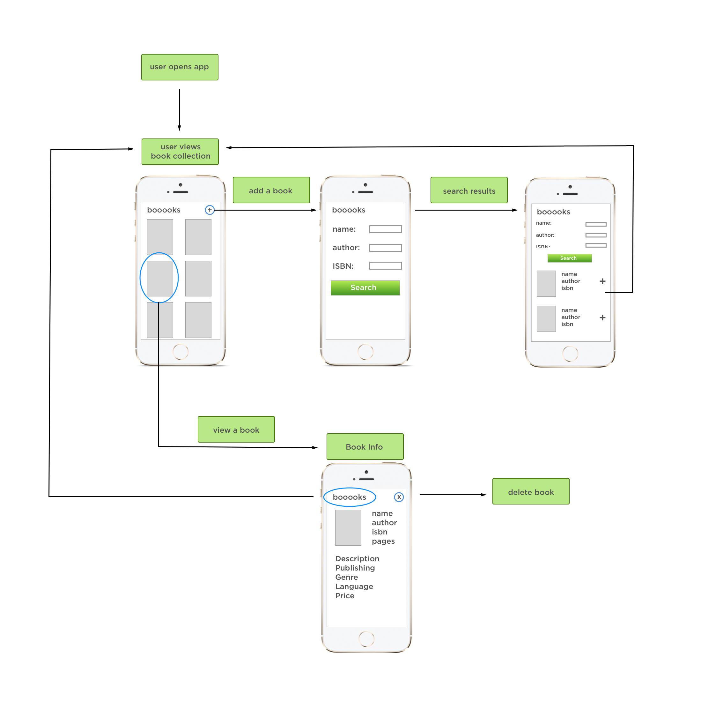
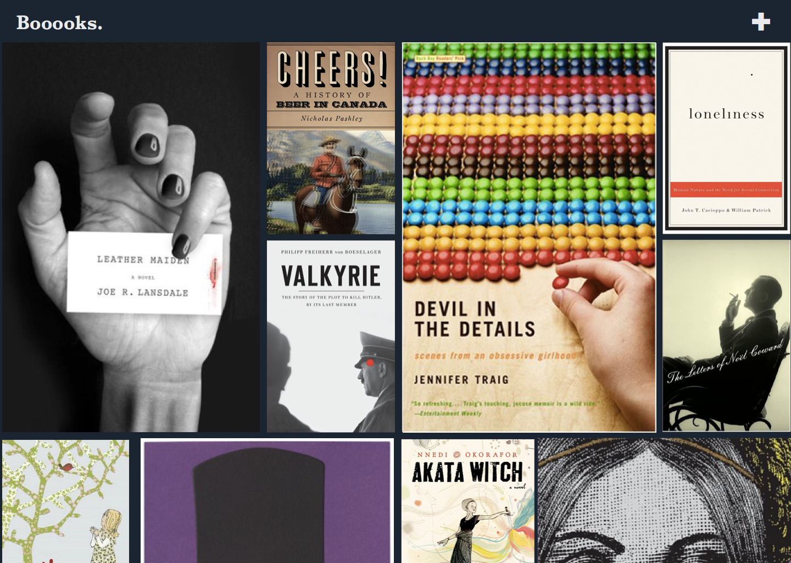
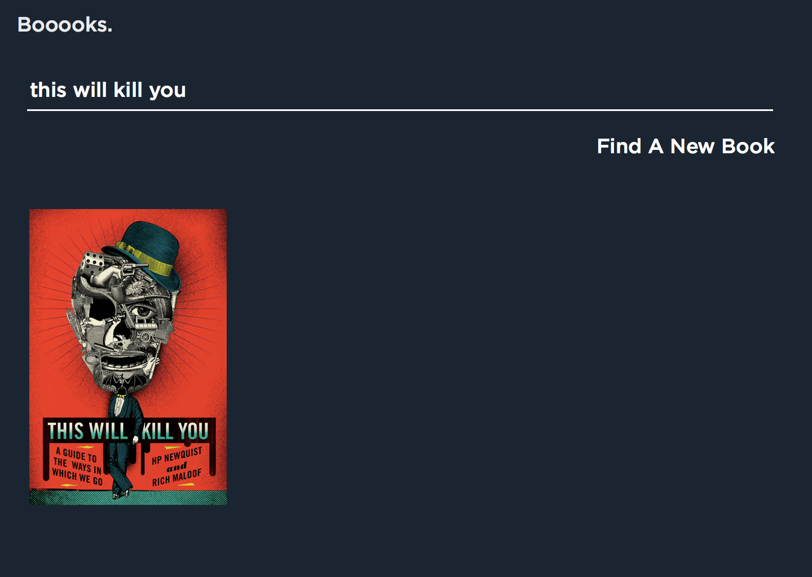
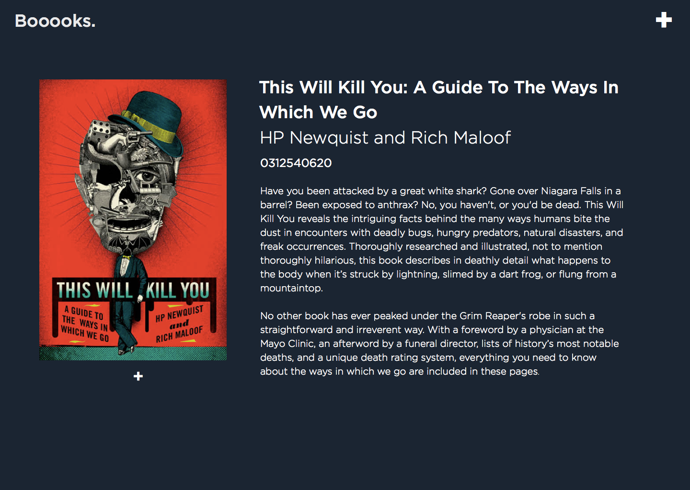

Assignment
For this project I was assigned to create a book app that allowed users to search for a book online and add it to their collection. To me, collections is something that people can boast to others. Since the majority of books have beautiful covers, I wanted to showcase book covers as the main attraction of the collection. With that idea in mind, I was ready to start planning everything out.
Userflow
I first started with a Userflow but combined it with a Wireframe to better explain my process on how the app would work. This made it easier for understand others my thought process.
Moodboard
My moodboard was inspired by the calm oceans that I remember back home. When I think of books, I think of peace, quiet and being able to relax. I don't want any distraction when I'm reading, so I can be fully engaged with the story.

Mockups
I started to create mockups based on userflow and moodboard. I liked the idea of books stacked right next to each other like a stamp or photography collection.
  I liked the idea of making it really simple to add a book. It ties into my idea of a collection app, to make it easy to showchase what books they own.
Development
I coded the website with HTML/CSS/jQuery. I used Masonry.js to implement the responsive grid the books are on.